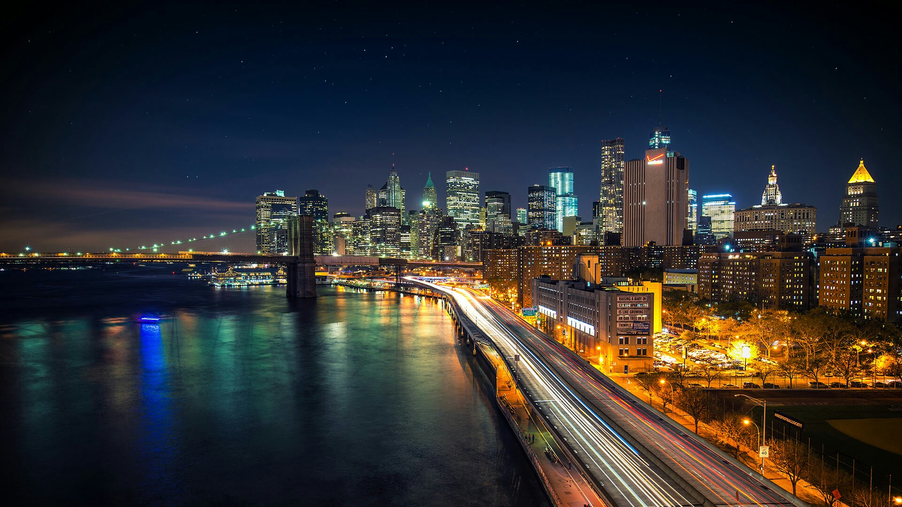

-

Hong Kong
Hong Kong es una ciudad que no duerme, una ciudad con decenas de visitas de ocio y culturales, con decenas de mercados y mercadillos callejeros.
-
Londres
Londres es una ciudad apasionante, con un ambiente único, una mezcla entre lo más tradicional de los ingleses y la modernidad de una ciudad a la vanguardia.
-

Manhattan
Manhattan, una isla ubicada en el norte de Nueva York donde encontrarás en sus calles los mejores lugares de entretenimiento, acompañados de los mejores musicales en Broadway.
-
Moscú
La capital de la República Rusa, Moscú, está rodeada por colinas que circundan la ciudad en la que se mezclan con un gusto exquisito monumentos, parques y zonas residenciales con preciosos jardines.
-
Nueva York
Nueva York se ha convertido en los últimos años y por méritos propios en la capital económica y cultural más importante del mundo. Nueva York ofrece un ambiente y un estilo de vida único.
-
Tokio
Su sorprendente cultura, su animada vida nocturna, probar su exótica gastronomía, ir de compras, Tokio es una de las ciudades más apropiadas para ello.